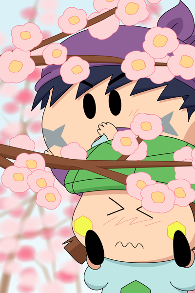

サスケとカメリは、ミオリの家から見えた梅の並木にやってきました。
小さな二人を覆い隠すくらいに、ピンク色の梅の花がたくさん咲いています。
カメリ「この梅のお花を～見てくれたら～、ミオリさんも～
きっと喜んでくれるはず～なんだけど～」
サスケ「カメリの言う通りだぜ！
オイラたちでこの梅の花を見せてあげるだぜ！」
カメリ「でも～どうやって見せたらいいのかしら～」
サスケ「う～ん、やっぱり枝を持っていくしかないのか・・」
カメリ「ええ～？ちょっとかわいそうだよ」
サスケ「大丈夫だぜ。
こんなにたくさん咲いているんだから１本くらい…」
カメリにまたがったサスケが、１本の梅の枝に手を伸ばしました。
サスケ「カメリ、もうちょっと右だぜ・・」
カメリ「こう～～？」
「こらーーーっ。
勝手に梅の枝を折らないで！！！」
サスケ「わっ」
カメリ「きゃっ」
突然の大きな声に、二人はバランスを崩してしりもちをついてしまいました。
カメリがサスケを肩車する絵を描きたくてこうなりました(^^)。普通逆じゃない？という声が聞こえてきそうですが、私的に「カメリは漬物石を運ぶので力持ち」＆「上に乗りたがらない」という思いから、カメリにサスケをかついでいただきました。でも小さい女の子の力では、サスケの体重を支えるのはきついのでしょう。
さて次回は、私の見慣れたオリフェを登場させる予定です。
(2013/9/16)